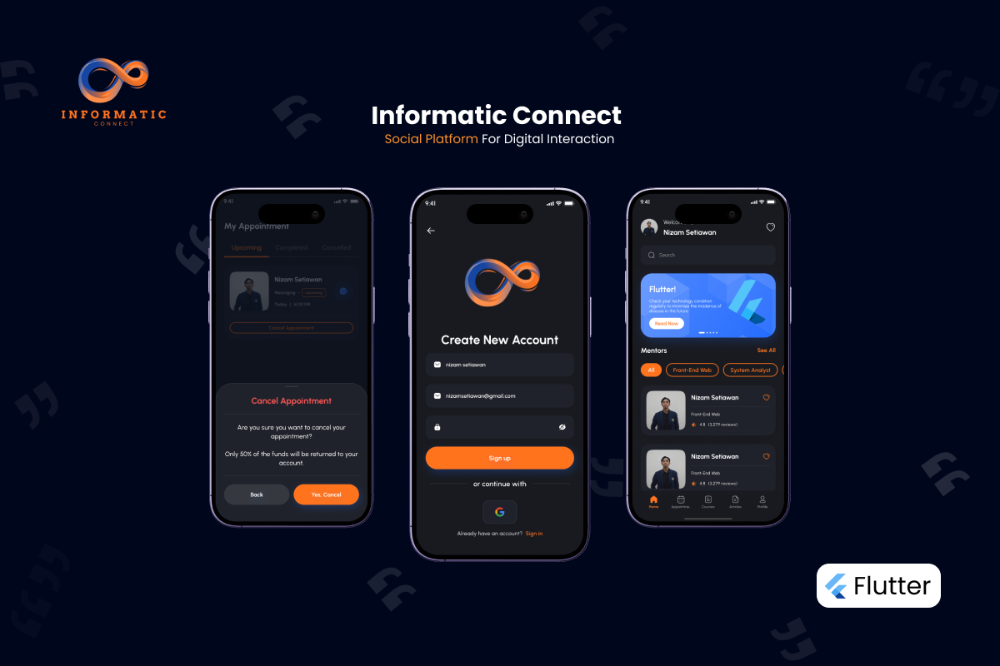

<div id="ajax-page" class="ajax-page-content">
    <div class="ajax-page-wrapper">
        <div class="ajax-page-nav">
            <div class="nav-item ajax-page-prev-next">
                <a class="ajax-page-load" href="vtour.html"><i class="lnr lnr-chevron-left"></i></a>
                <a class="ajax-page-load" href="us.html"><i class="lnr lnr-chevron-right"></i></a>
            </div>
            <div class="nav-item ajax-page-close-button">
                <a id="ajax-page-close-button" href="#"><i class="lnr lnr-cross"></i></a>
            </div>
        </div>

        <div class="ajax-page-title">
            <h1>Informatic Connect</h1>
        </div>

        <div class="row">
            <div class="col-sm-8 col-md-8 portfolio-block">
                <div class="owl-carousel portfolio-page-carousel">
                    <div class="item">
                        
                    </div>
                </div>


                <script type="text/javascript">
                    jQuery(document).ready(function ($) {
                        $('.portfolio-page-carousel').imagesLoaded(function () {
                            $('.portfolio-page-carousel').owlCarousel({
                                smartSpeed: 1200,
                                items: 1,
                                loop: true,
                                dots: true,
                                nav: true,
                                navText: false,
                                margin: 10,
                                autoHeight: true
                            });
                        });
                    });
                </script>
            </div>

            <div class="col-sm-4 col-md-4 portfolio-block">
                <!-- Project Description -->
                <div class="project-description">
                    <div class="block-title">
                        <h3>Description</h3>
                    </div>
                    <ul class="project-general-info">
                        <li>
                            <p><i class="fa fa-user"></i>as Flutter Developer</p>
                        </li>
                        <li>
                            <p><i class="fa fa-globe"></i> <a
                                    href="https://github.com/nizamsetiawan/InformaticConnect_App" target="_blank">github
                                    repository</a></p>
                        </li>

                    </ul>

                    <p class="text-justify">Informatic Connect is a social platform specifically designed for
                        technology enthusiasts. Users can interact, share, and discuss various aspects of technology,
                        from the latest developments to current issues in the world of technology. This application also
                        provides the opportunity to connect with mentors in the IT field of your choice and seek
                        consultations.</p>
                    <!-- /Project Description -->

                    <!-- Technology -->
                    <div class="tags-block">
                        <div class="block-title">
                            <h3>Technology</h3>
                        </div>
                        <ul class="tags">
                            <li><a>Dart</a></li>
                            <li><a>Http</a></li>
                            <li><a>Sql</a></li>
                        </ul>
                    </div>
                    <!-- /Technology -->

                </div>
                <!-- Project Description -->
            </div>
        </div>
    </div>
</div>